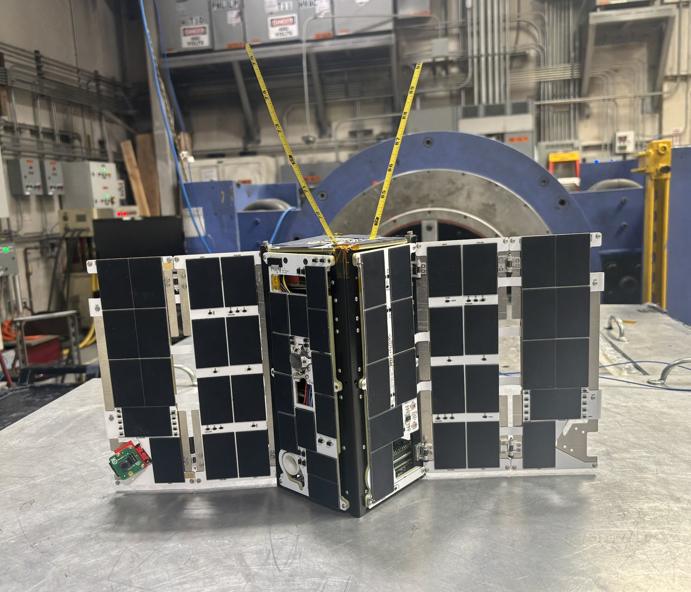
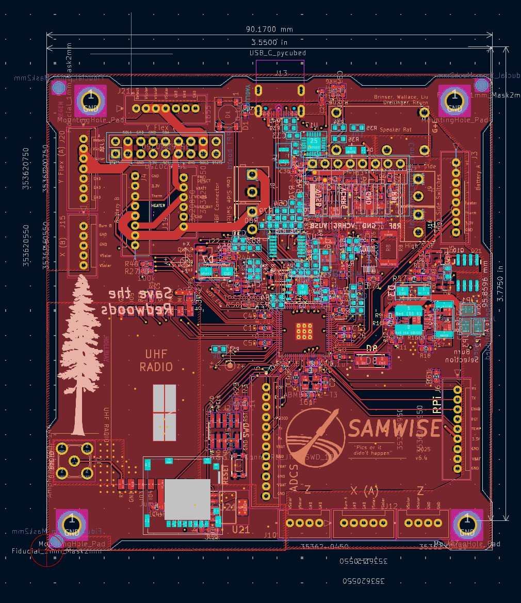
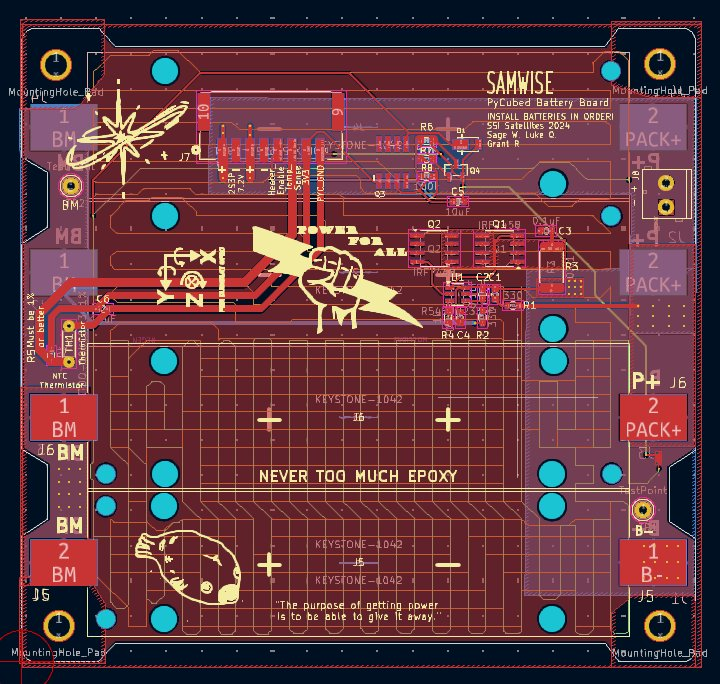
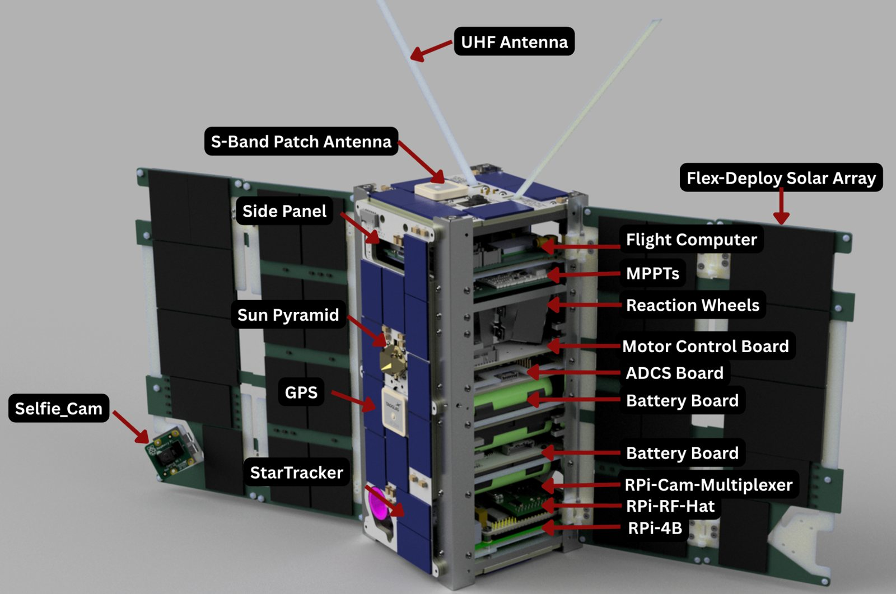

Samwise, a 2U CubeSat
Stanford Space Initiative, satellites team co-lead. Sep 2024 to present.
I lead end-to-end design and delivery of Samwise, launching on SpaceX Transporter-18. It carries three cameras, UHF and S-band radios, full attitude control, and custom avionics across 13 unique PCBs.
I redesigned the primary RP2350B flight computer in KiCad, adding the burn-wire deployment and watchdog circuits that make antenna and panel release reliable. I brought up and tested every flight board, wrote the design documentation, and built 2.4 GHz radio test systems for image downlink with UART integration to the software team.
- Flight computer
- RP2350B
- Radios
- UHF and S-band
- Boards in the stack
- 13 unique PCBs
- Launch
- Transporter-18, Nov 2026



